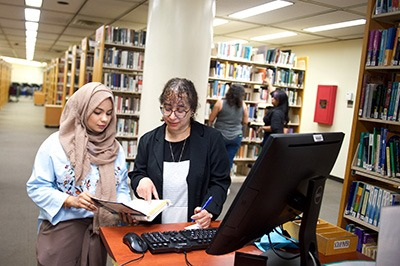
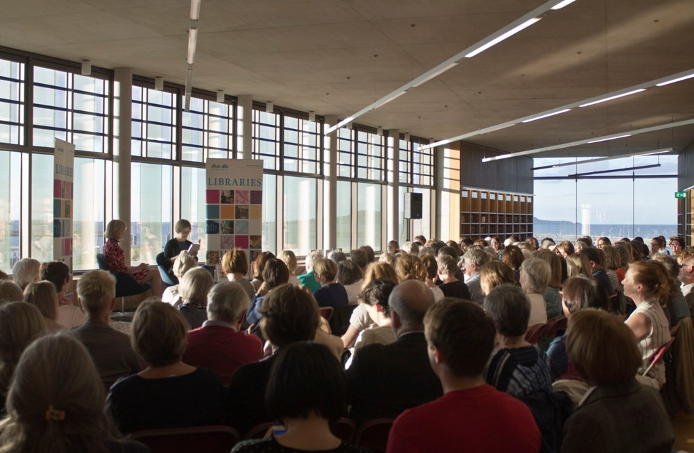
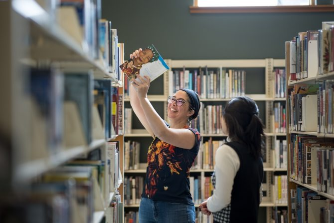

Borrowing Service
In here, we have book loans where users can get information by borrowing books. However, there is a loan periods where users need to return the book to the library.
Also we offered to users an e-book and audiobook. Users can access to digital collections, including how to borrow and return the material that users borrow.
Then, we also have interlibrary loan. From here users can get the details on bowworing materials from the other libraries.

Digital Resources
We have an online catalog where users can read the instruction for using the library's online catalog to search for books and other materials. For example, users can use OPAC.
We also have digital archives. Users can find the information on accessing digital archives, historical documents and special collections.
Research Assistance
In our library we have a reference services where users can use the availability of reference librarians for research help. Users can ask a question at the reference desk where the librarian are.

Programs and Events
Our library also offered workshops and classes for students. Students can get more information on educational workshops and classes offered by the library.
Other than that, we also have book clubs. With this, users can get a details about book club meetings and how to join.

Technology Services
Here in our library, we offered users a technology services such as printing, scanning and copying. Users can copy any of the information on available technology and related costs.

Community Services
Our library offered a community services for the users such as volunteer opportunities. Users can know how to volunteer at the library and available opportunities.